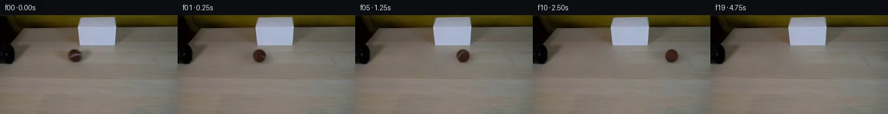

![首帧]()

Round 00
2026-11-05T16:25:48.730453+00:00像素候选变化代码 +216/−0inspection 更新
pixels 9cc3252740c466b9 · code ff5e2e5af7b06073
查看本轮 generate.py 真实 diff
--- previous/generate.py
+++ current/generate.py
@@ -0,0 +1,216 @@
+"""Local source-pixel reconstruction and analytical rolling-sphere continuation."""
+from pathlib import Path
+import json
+import numpy as np
+from PIL import Image, ImageDraw
+from scipy.ndimage import gaussian_filter, map_coordinates
+from scipy.sparse import lil_matrix
+from scipy.sparse.linalg import spsolve
+from artifact_io import save
+
+ROOT = Path(__file__).resolve().parent
+W, H, COUNT, FPS = 256, 144, 20, 4
+CX0, CY, RX, RY = 107.7, 58.8, 9.3, 9.5
+SOURCE = np.asarray(Image.open(ROOT / 'first_frame.png').convert('RGB'))
+YY, XX = np.mgrid[:H, :W]
+
+
+def reconstruct_table():
+ """Harmonic RGB fill with small, source-derived stationary grain."""
+ # This local ellipse covers the original ball and its diffuse shadow.
+ distance = ((XX - 107.0) / 37.0) ** 2 + ((YY - 60.5) / 16.0) ** 2
+ mask = (distance < 1) & (YY >= 47)
+ coords = np.argwhere(mask)
+ indices = np.full((H, W), -1, dtype=int)
+ indices[mask] = np.arange(len(coords))
+ matrix = lil_matrix((len(coords), len(coords)), dtype=float)
+ rhs = np.zeros((len(coords), 3), dtype=float)
+ for k, (y, x) in enumerate(coords):
+ matrix[k, k] = 4.0
+ for yn, xn in ((y - 1, x), (y + 1, x), (y, x - 1), (y, x + 1)):
+ j = indices[yn, xn]
+ if j >= 0:
+ matrix[k, j] = -1.0
+ else:
+ rhs[k] += SOURCE[yn, xn]
+ clean = SOURCE.astype(float).copy()
+ clean[mask] = spsolve(matrix.tocsr(), rhs)
+ # Horizontal grain from the clear table at the same y; no new randomness.
+ smooth = gaussian_filter(SOURCE.astype(float), sigma=(0.7, 1.0, 0))
+ residual = SOURCE.astype(float) - smooth
+ copied_grain = residual[YY, np.minimum(XX + 66, W - 1)]
+ taper = np.clip((1 - distance) * 5, 0, 1)
+ clean += copied_grain * (0.50 * taper * mask)[..., None]
+ return np.clip(clean, 0, 255), mask
+
+
+BACKGROUND, REPAIR_MASK = reconstruct_table()
+
+
+def source_sample(x, y):
+ return np.stack([map_coordinates(SOURCE[..., c].astype(float), [y, x], order=1,
+ mode='nearest') for c in range(3)], axis=-1)
+
+
+# Surface light stays fixed while surface coordinates rotate.
+LIGHT = np.array([-0.38, 0.45, 0.81])
+LIGHT /= np.linalg.norm(LIGHT)
+ROLL_AXIS = np.array([0.0, 0.70, -np.sqrt(1 - 0.70 ** 2)])
+
+
+def shade(normals):
+ return 0.84 + 0.18 * np.maximum(np.sum(normals * LIGHT, axis=-1), 0)
+
+
+def inverse_roll(normals, angle):
+ c, s = np.cos(angle), np.sin(angle)
+ dot = np.sum(normals * ROLL_AXIS, axis=-1)[..., None]
+ return normals * c - np.cross(ROLL_AXIS, normals) * s + ROLL_AXIS * dot * (1 - c)
+
+
+def surface_colour(normals, angle):
+ material = inverse_roll(normals, angle)
+ # The observed front hemisphere is mirrored over the unobserved rear.
+ # Both hemispheres meet continuously at the silhouette.
+ sx, sy = material[..., 0], material[..., 1]
+ sz = np.abs(material[..., 2])
+ source_normals = np.stack([sx, sy, sz], axis=-1)
+ sample = source_sample(CX0 + RX * sx, CY - RY * sy)
+ rho = np.sqrt(sx * sx + sy * sy)
+ # Separate the source's pale seam from the dark brown felt, excluding
+ # mixed table pixels at the extreme silhouette.
+ neutral = np.clip((sample[..., 2] - sample[..., 0] + 13) / 15, 0, 1)
+ bright = np.clip((sample.mean(axis=-1) - 53) / 20, 0, 1)
+ seam_weight = neutral * bright * np.clip((1.02 - rho) / 0.08, 0, 1)
+ body_variation = np.clip((sample[..., 0] - 49) * 0.22, -3.5, 4.5)
+ body = np.array([48.7, 25.7, 17.6]) + body_variation[..., None]
+ seam = np.clip(sample, [65, 60, 62], [100, 101, 110])
… diff truncated; 129 more lines …